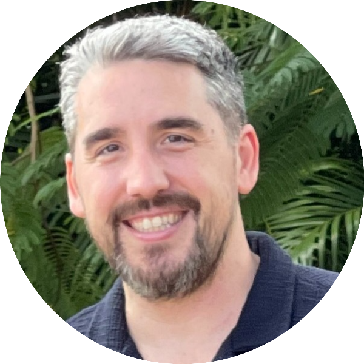

|  |
Sergio L. Martinez Jr.
Sr. Project Manager at Telos Health, Inc.
Contact Me
Experienced Program Manager with 12+ years of demonstrated history developing complex medical devices. As an engineer I developed and lead multiple projects from concept to product launch. Strong leadership and communication skills, developing processes, schedules and collaborating with external development partners. Demonstrated experience leading cross functional teams to drive closure of technical issues and advising on executing projects successfully.
|
Education
| School |
Degree |
Year |
| University of Florida |
Master of Business Administration |
2017 |
| University of Florida |
M.S. Industrial and Systems Engineering |
2017 |
| Florida International University |
M.S. Biomedical Engineering |
2011 |
| Florida International University |
B.S. Biomedical Engineering |
2008 |
Professional Experience
Telos Health, Inc (A subsidiary of Imperative Care, Inc. that was incorporated in 2022) Campbell, CA
Sr. Project Manager Jun 2021 - Present
- Managed the product development and design control deliverables of a novel robotic platform for use in stroke treatment from concept into product development
- Developed a product strategy and roadmap in collaboration with the marketing team and senior leadership
- Created processes and the quality management system to support a cross-discipline development effort consisting of capital, sterile and non-sterile disposables, and software
- Implemented various project management styles consisting of mostly Agile methodologies, however integrating traditional waterfall methods for the hardware project teams
- Managed budget estimation and approvals including headcount, operating expenses and capital needs estimates for financial planning
- Lead regular meetings between project teams, internal stakeholders and external vendors
- Lead the organization in setting annual and quarterly goals (OKRs)
Auris Health, Inc (Acquired by Johnson and Johson in 2019) Redwood City, CA
Program Manager, Platform Hardware Jan 2019 - May 2021
- Managed the product development and design control deliverables of the Monarch robotic platform hardware for multiple applications from concept to product launch
- Created and maintained schedules for each project
- Lead regular meetings between project teams, internal stake holders and external vendors
- Organized and created a team, processes and operating mechanisms for the development of internal manufacturing tools
- Lead and managed cross functional teams to resolve various technical issues
- Managed the execution of a clinical study for first in human use of a novel product
Staff Systems Engineer Apr 2018 - Dec 2018
- Lead a cross functional team in the development of the Monarch Robotic Platform by defining project schedules, requirements, integration of the various sub-systems, and design verification
- Developed project plans, requirements, risk management documents, and test plans for the design and development of various features and sub-systems of the Monarch robotic platform
- Lead subject matter expert teams toward investigation and resolution of complex issues during the development and manufacture of the product
Sr. Systems Engineer Aug 2016 - Apr 2018
- Developed project plans, requirements, risk management documents, and test plans for the design and development of the clinical tower and fluidics sub-systems for the Monarch Robotic Platform
- Collaborated with the quality and regulatory teams to develop the risk management process, design verification procedures, and sample size guidance for the organization
- Lead subject matter expert teams toward investigation and resolution of complex issues during the development and manufacture of the product
Mako Surgical Corp. (Acquired by Stryker Orthopedics in 2013) Fort Lauderdale, FL
Sr. Engineer, RIO Robotics Oct 2014 - Jul 2016
- Developed project plans, requirements, risk management documents, and test plans for the design and development of various features and subsystems of the Mako RIO 3.0 robotic platform
- Lead subject matter expert teams toward investigation resolution of complex issues during manufacture of the product, within factory/field service, and complaint investigations
- Created and executed system level verification protocols and reports for the Mako RIO robotic platform
- Maintained the requirements, risk management, and traceability documents for the robotic platform development team towards the release of the Mako RIO robotic platform
Product Development Engineer, Biomechanics May 2012 - Oct 2014
- Lead verification and validation activities for total knee arthroplasty implants including writing protocols and reports, coordinating cross functional teams for test execution, and establishing relationships with new external suppliers and test facilities
- Lead the activities for the total knee replacement application for the development of the user manual and coordinated labs for surgeon evaluations, verification, and validation activities and surgical workflow evaluation
- Designed instruments for manual and robotic total knee replacement compatible with the novel implant systems including requirements, test planning, and risk management
System and Test Engineer, Platform Development Jul 2011 - May 2012
- Wrote and executed verification protocols and reports for the Mako RIO Robotic System
- Developed test tools, fixtures and test procedures for reliability, accuracy, assembly, and automated testing
- Contributed to the manufacturing and inspection procedures for the Mako RIO robotic system
- Executed testing to towards the release of the Partial Knee Application
- Investigated and completed customer complaint and CAPA inquiries
Skills
- Proven excellence in project management using Agile/Scrum and Waterfall methodologies
- Working knowledge of 21 CFR 820
- Experience with GD&T
- Knowledgeable in statistical quality control
- Proven experience with FDA 510k submissions and clearance
- Proven excellence in verification, and validation for medical devices
- Software competencies in MS Project, Smartsheet, JAMA (use and administration), Jira and Confluence (use and administration), Propel, Agile PLM, Matlab, Solidworks, Minitab, Linux, MKS Integrity, Geomagic